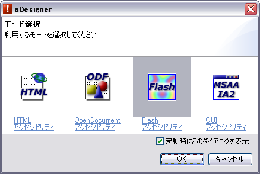
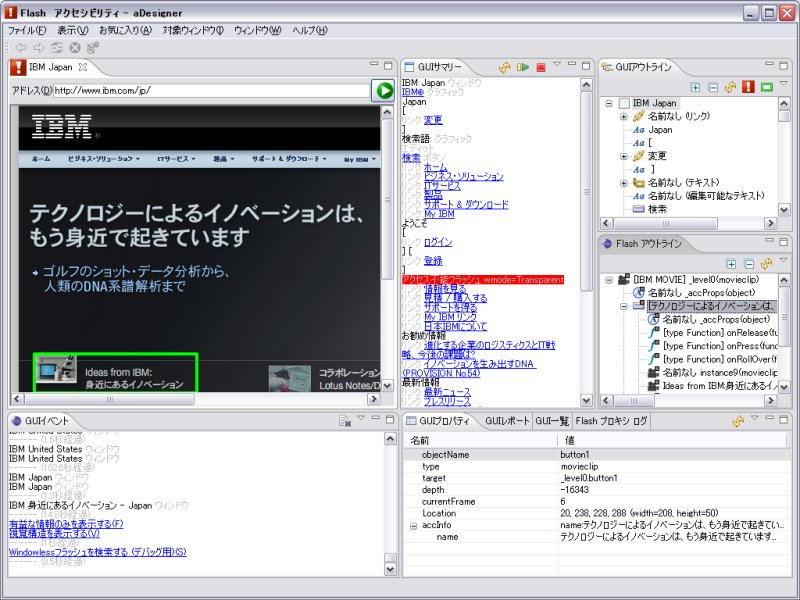
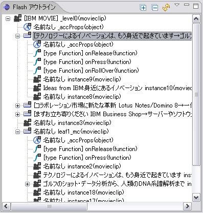
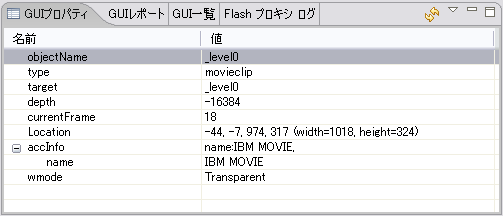
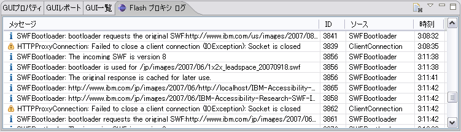

Flash アクセシビリティモードの構成
モード切替
メニューから 「ファイル」 > 「モード選択...」 を選択し、「モード選択」 ダイアログを表示します。「Flash アクセシビリティ」 を選択して、「OK」 ボタンを選択します。

図1. モード選択ダイアログ
Flash アクセシビリティモードではブラウザビューに加えて、GUI アクセシビリティモードと同様、GUI サマリービュー、GUI アウトラインビュー、GUI プロパティビュー、GUI イベントビュー、GUI レポートビュー、GUI 一覧ビューが表示されます (図2)。ただし GUI プロパティビューに表示される情報は異なります。詳細については各セクションをご覧ください。本モードではそれに加えて、Flash アウトラインビュー、および Flash プロキシ ログビューが表示されます。

図2. Flash アクセシビリティモードのユーザインタフェース
Flash アウトラインビュー
中段右側にあるのが Flash アウトラインビューです (図3)。Flash の実行時内部構造が表示されます。
プロキシによる内部構造の取得
Flash コンテンツの内部では、オブジェクトの移動/変形、表示/非表示の制御などを行うために ActionScript と呼ばれるスクリプト言語を使用しています。これは ECMAScript (俗に言う JavaScript) をベースとした言語です。このビューでは ActionScript から見たオブジェクトの木構造を表示します。ここにはオブジェクトの種類、値、コンテンツ制作者が付けたインスタンス名などが実際の親子関係を維持して表示されています。これらの情報を用いて、制作者が効率よくコンテンツを修正し、アクセシビリティを高めることができます。
通常、Flash コンテンツの制作者が明示的に許可しない限り、外部からコンテンツの内部構造にアクセスすることは不可能ですが、aDesigner では内部で動作するプロキシを介して Flash コンテンツを取得することにより、アクセスを可能にしています。
ビューの各エントリは 「[ テキスト情報 ] 名前(種類)」 の形式で表示されます。名前は制作者がオブジェクトに付けたインスタンス名や、オブジェクトのフィールド名/メソッド名で、ActionScript でそのオブジェクトを指すときに用いられます。種類はエントリの種類を表し、ActionScript の typeof 演算子の返り値です。これには、以下の種類があります。
これらの意味については Flash のマニュアル 「ActionScript リファレンスガイド」 を参照してください。エントリのアイコンは同様にオブジェクトの種類を表します。
- string
- movieclip
- object
- number
- boolean
- function
また、オブジェクトが持つテキスト情報は 「 [ 」 および 「 ] 」 に囲まれて表示されます。
各エントリを選択すると、GUI プロパティビューにオブジェクトのより詳しい内容が表示されます。詳細は、次の 「GUI プロパティビューの表示内容」 をご覧ください。

図3. Flash アウトラインビュー
メニューの説明
 最新の状態に更新する (Shift+F10)
最新の状態に更新する (Shift+F10)- 表示内容を更新して、最新の状態にします。
- 有益な情報のみを表示する (Ctrl+F10)
- 画面に表示されない (種類が number や string, function, boolean) プロパティ/メソッドなどを非表示にします。画面に表示されるオブジェクトの親子関係だけを見たい場合に有用です。
- 視覚構造を表示する (Ctrl+F10)
- オブジェクト作成時の論理的な親子関係ではなくて、視覚的なオブジェクトの包含関係に基づいた木構造を表示します。
- Windowless フラッシュを検索する (デバッグ用) (Ctrl+F10)
- Flash コンテンツをウェブページに埋め込む際に、wmode プロパティを opaque ではなく transparent に指定すると、スクリーンリーダ (および MSAA) からコンテンツにアクセスできなくなります。このオプションをオンにすると、transparent の場合でも Flash アウトラインを表示します。オフの場合は表示しません。
- すべての情報を表示する (デバッグ用) (Ctrl+F10)
- Flash の内部変数を含め、すべてのプロパティ/メソッドを表示します。さらにオブジェクトに循環参照が存在する場合でも枝刈りをせず、そのまま見かけ上の親子関係でツリーを表示します。
注：このオプションがオンの時に 「すべて展開する」 を実行すると、無限ループに陥る可能性があります。
- Flash プロキシ設定 (Ctrl+F10)
- Flash プロキシ設定パネルを表示します。
GUI プロパティビューの表示内容
Flash アウトラインビューでエントリを選択すると下段右にある GUI プロパティビューにその詳細が表示されますが (図4)、
Flash アクセシビリティモードでは、ビューに表示される内容が GUI アクセシビリティモードの場合とは異なります。
また、エントリの種類によって表示されるプロパティが異なります。主なプロパティ名とその意味は以下のとおりです。

図4. GUIプロパティビュー
- wmode
- (トップレベルのエントリのみ) ウェブページに埋め込まれる際に指定されたwmodeプロパティの値。
- type
- オブジェクトの種類 (型)。ActionScript の typeof 演算子による返り値。どのような値があるかは、前述のこちらを参照してください。
- className
- type の値が object の場合に、どのクラスのインスタンスであるかが表示されます。例えば、ボタンなら "Button"、テキストフィールドなら "TextField"、配列なら "Array" が表示されます。
- objName
- オブジェクトの見かけのフルパス名。変数への代入などにより、オブジェクトへの参照を作成した場合には、真のフルパス名 (target プロパティ値) と異なることがあります。
例: _level0.button1.b1txt
- target
- オブジェクトの真のフルパス名。オブジェクトの target プロパティ値です。このオブジェクトが、ルートオブジェクトからどのような順番で作られたかを表します。
例: _level0.button1.container.button
- depth
- オブジェクトの存在するレイヤー。オブジェクトの getDepth メソッドの返り値です。数値が大きいほどオブジェクトは前面に表示されます。
- currentFrame
- オブジェクトの存在するフレーム。
- Location
- オブジェクトの位置とサイズ。aDesigner は、この値を元にしてブラウザビューにハイライトの長方形を描画します。ボタンオブジェクト (type が object で、className が Button であるオブジェクト) の場合は、画面に実際に表示される位置とずれることがあります。
- value
- オブジェクトの値。オブジェクトの type が number、string、および boolean である場合に表示されます。
- isUIComponent
- オブジェクトが "コンポーネント" である場合には true が表示されます。コンポーネントについては Flash のマニュアルを参照してください。
- isOpaqueObject
- オブジェクトが子を持つが、それを無視して単一のオブジェクトとみなせる場合に true が表示されます。
aDesigner が Flash アウトラインにおいて探索を行う場合、この値が true のオブジェクトの子孫は探索しません。
- isInputable
- このオブジェクトが入力可能である場合 true が表示されます。例えば、テキストボックス、チェックボックスなどは入力可能であるとみなされます。
- accInfo
- アクセシビリティ情報。オブジェクトの子である _accProps インスタンスおよび _accImpl インスタンスの内容が表示されます。
_accProps に関しての詳細は、Flash のマニュアルを参照してください。
_accImpl に関しての詳細は、Flash 8 開発環境に付属のソース (LabelAccImpl.asなど) を参照してください。
accInfo の子プロパティには以下のものがあります。
- name
- スクリーンリーダによって読み上げられるテキスト情報。
- description
- オブジェクトのより長い説明。
- silent
- false の場合、スクリーンリーダから "見えない" オブジェクトになります。
- forceSimple
- true の場合、このオブジェクトの子孫はスクリーンリーダから見えません。
- shortcut
- ショートカットキーを表す文字列。
例: Control+A
- role
- オブジェクトの MSAA role を表す文字列。
例: チェックボックス
- state
- オブジェクトの MSAA state を表す文字列。
例: チェックされています。
- defaultAction
- オブジェクトの MSAA default action を表す文字列。
例: Check
その他のユーザインタフェースについては、「GUI プロパティビュー」を参照してください。
Flash プロキシ ログビュー
Flash プロキシ ログビューは、下部右側に表示されます (図5)。
起動時の状態では GUI プロパティビューが選択されているため背面に隠れています。
前述したように、aDesigner は Flash コンテンツの内部構造にアクセスするため、
内部的にプロキシを動作させ、そのプロキシを介して Flash コンテンツを取得します。
プロキシは目的のコンテンツの内部構造にアクセスするための処理を行います。
ビューにはプロキシのそれらの動作に関するログメッセージが表示されます。
1つのエントリがプロキシの1つのログメッセージに対応します。
各エントリは、メッセージ、ID、ソース、時刻から構成されています。
- メッセージ
- プロキシの出力したログメッセージ。
- ID
- プロキシがその時点で処理している Flash コンテンツの ID。プロキシは並列に複数の Flash コンテンツを処理します。ログメッセージがどのコンテンツを処理しているスレッドのものかを判別するため、コンテンツに一意に割り当てられた ID が表示されます。プロキシ全体の動作に関するメッセージには ID が付きません。
- ソース
- ログを出力した、プロキシの Java™ クラス。
- 時刻
- ログが出力された時刻。
ログにはアイコンの付かないトレースログ、 のアイコンで示される情報ログ、のアイコンで示される警告ログ、および
のアイコンで示される情報ログ、のアイコンで示される警告ログ、および のアイコンで示されるエラーログの4種類があります。トレースログは初期状態では表示されません。
のアイコンで示されるエラーログの4種類があります。トレースログは初期状態では表示されません。

図5. Flash プロキシ ログビュー
 クリア (Shift+F10)
クリア (Shift+F10)- イベントログを消去します。
- トレースログを表示する (Ctrl+F10)
- プロキシの詳細な動作に関するトレースログを表示します。主にプロキシのデバッグ時に使用します。
- 設定 (Ctrl+F10)
- Flash プロキシ設定パネルを表示します。
インデックスに戻る
JavaおよびすべてのJava関連の商標およびロゴは Sun Microsystems, Inc.の米国およびその他の国における商標。